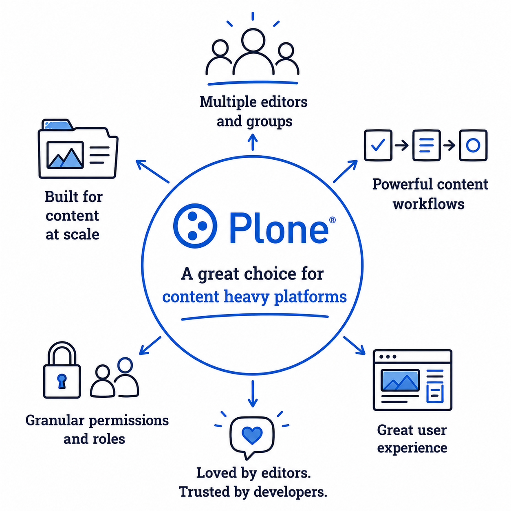

Protected by the platform
Workflow states and granular permissions decide who sees, changes and publishes every single item.
Theme Clara for Plone Blicca
Plone is the open-source CMS for organisations that publish with responsibility: workflow and permissions protect every item, migrations carry it across versions, and the REST API keeps it open.

Workflow states and granular permissions decide who sees, changes and publishes every single item.
Six major releases since 2001, each with migration steps that carry existing content safely forward.
Everything in the site reads and writes as structured JSON — for any front end, integration or export.
Hundreds of thousands of pages, files and records stay organised in one consistent content tree.
Clara's namesake is clarity: content lives in one tree, and each item carries a workflow state everyone can read.
Plone is free software: download it, try the demo and bring your questions along.